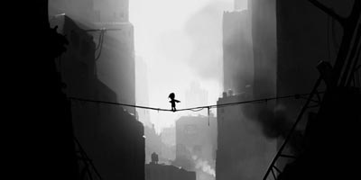
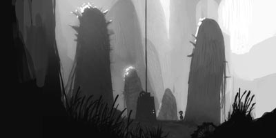
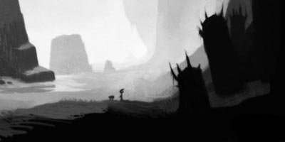

Playdead just announced that Limbo is headed to XBLA. Looking forward to seeing this at GDC.



Limbo looks fantastic, and there's something just so archetypally elegant about that little stroll in the woods; its evocative of Miyamoto's childhood hillside wanderings, and my own memories of the intersections of exploration and imagination.
Are atmospheric silhouette graphics all that it takes to impress me these days? I think no - Feist and Limbo in particular look to be particularly subtle and refined in gameplay and sound as well - but there still is something to be said for simplicity of visuals taking such a strong position in the indie community now.
One of our tenets is to look closely at what the big studios do, then do the exact opposite.
This is a stylistic as well as practical decision. What happens if non-mainstream style is appropriated, to some extent, by the mainstream (as things often do with very near everything besides games)? What's next?
Comments:
2010-03-29 15:50:19
Joe McGinn
Very cool, did you see it at GDC?
By the way Brian, I am also a game designed in your part of the world - currently based in Taipei. Thinking of checking out the Shanghai scene though. I'll be over a few days next week (Apr 8-10) on holiday with my family, but also to check out what it might be like to live there. Do you like living in Shanghai? (Feel free to connect on LinkedIn: http://tw.linkedin.com/pub/joe-mcginn/1/a34/0 )
2010-03-31 18:37:31
Bryan
Hi Joe,
thanks for the comment! I did have a chance to see it at GDC, it looked great. Hopefully I'll have time to do some writing on post-GDC takeaways. Good to connect with you on LinkedIn. See you in Shanghai.
2010-03-31 22:42:51
Mister Bai
I don't understand whyyou have not been posting recentely, what has kept you so busy ?